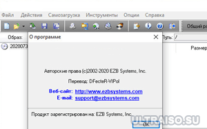
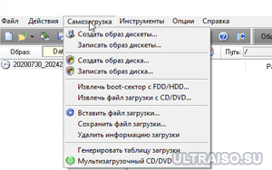

| Категория: | Работа с файлами | |
| Поддерживаемые ОС: | Windows 8 | |
| Разрядность: | 32 bit, 64 bit, x32, x64 | |
| Для устройств: | Компьютер | |
| Язык интерфейса: | на Русском | |
| Версия: | Последняя | |
| Разработчик: | EZBSystems |
Просто скачать Ультра ИСО для Windows 8 по тому как он является популярным софтом, который работает с ISO образами. Полные копии с загруженными файлами или играми, которые можно монтировать в виртуальном варианте – это и есть DVD и CD образы. Программа создает или корректирует наличие тех или иных файлов, оптимизируя структуру дисков.
 |
 |  |
{kind=link}
{kind=link}
Ультра ИСО для Виндовс 8 на компьютер
Существует стандартная версия этого приложения и премиум вариант с расширенным ассортиментом опций. UltraISO является старым но весьма эффективным приложением, до сих пор почти все образы собираются в формате ISO. Программа способна обрабатывать почти все типы файлов, так же и сжимать уже существующие iso. В программе можно без распаковки начинать редактирование образов, это значительно облегчает процесс извлечения или записи. Приложение имеет интерфейс взаимодействия с пользователем с двойным окном, поэтому можно использовать на выбор или быстрые кнопки, или перетаскивание файлов мышкой.

Через UltraISO можно создать загрузочную флешку, для этого нужно подготовить собственно накопитель и образ windows скачав его предварительно из интернета. Образ диска нужно открыть через раздел «Файл» нажатием на значок «Открыть». После этого в разделе самозагрузки кликнуть на строку «Записать образ Жесткого диска». Появится окно, в котором потребуется осуществить форматирование флешки. В новом появившимся окошке нужно установить параметры. Сначала указывается емкость и во 2-ой строке отмечается FAT32.
UltraISO для версий windows:
Скачать UltraISO для windows 8 бесплатно
| Приложение | OS | Распаковщик | Формат | Версия | Интерфейс | Загрузка |
|---|---|---|---|---|---|---|
| UltraISO (Ультра ИСО) | Windows 8 | OpenBox | x32 | Бесплатно | на русском | |
| UltraISO (Ультра ИСО) | Windows 8 | OpenBox | x64 | Бесплатно | на русском | |
| UltraISO (Ультра ИСО) | Windows 8 | OpenBox | x32 — x64 | Бесплатно | на русском | |
Активировать программу можно взяв ключ активации или заменить файл в папке установленной программы. (пароль на архиве 4374) |
||||||
Как установить UltraISO для windows 8:
Запустите файл.

Ознакомьтесь с информацией и нажмите "Далее".

Нажмите "Далее", или снимите галочки с рекомендуемого ПО и нажмите "Далее". Если снять все галочки, рекомендуемое ПО не установится!
После всех шагов нажмите "Установить".

В части про раздел единицы распределения устанавливают 4096 байт, а в разделе про метку тома указывают «FLASH». Важно не забыть про отметку быстрого форматирования. Установив все перечисленные характеристики, можно кликнуть на значок «Начать». После отмечается пункт «Записать» и подтверждается уничтожение всех данных. По окончанию загрузки всех файлов Flash-накопитель будет готов к использованию. Представленная утилита требует небольшой затраты ресурсов, поэтому будет хорошо работать на разных устройствах. Этот факт объясняет популярность описанного софта среди пользователей Виндовс.
у меня не будет сложностей с установкой?
Классный софт!
при записи выскочила ошибка архив ISO поврежден и откат происходит что может быть?
Отличная программа. одобряю!
вроде без лагов
Класс, всё понято и просто!
лайк, отличная программа
Программа понятная, сложностей не возникнет!
Спасибо за инструкцию)